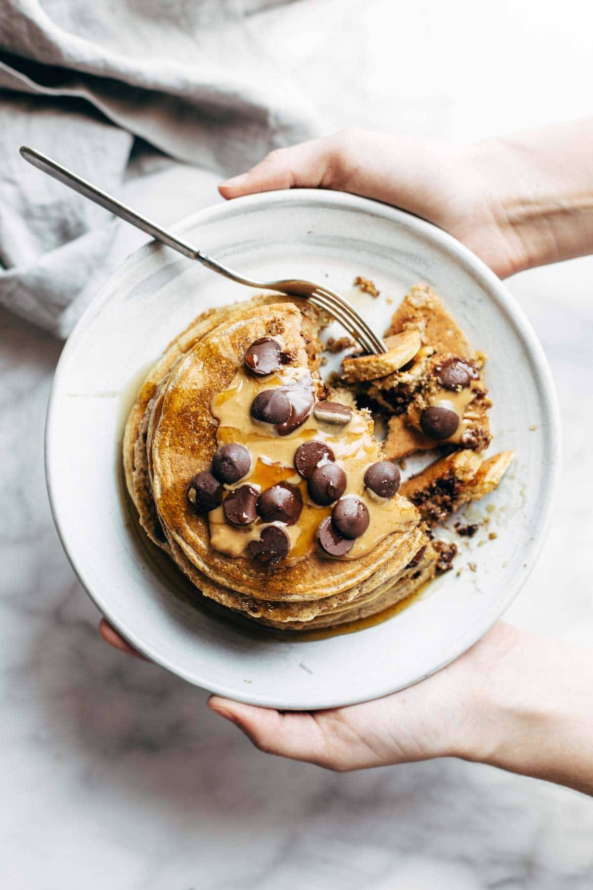

Patty's Protein Pancakes
They slap...HARD

I'm gonna level with you guys... I can't cook for sh*t. HOWEVER, these pancakes are the easiest pancakes to make in the world.
And to top it all off, they taste real nice and are amazing for you. There's no refined grains or sugar in these bad
boys. Just oats, naners, and eggs!
Ingredients
- 1 cup oats
- 1 banana
- 2 eggs
- 1/2 cup egg whites
- 4 teaspoons baking powder
- a pinch of salt
- a pinch of cinnamon
- 1-2 scoops protein powder
- 2 tablespoons flax meal
Steps
- Put all of those juicy ingredients in a blender. Mix until smooth. Seriously... that's it
- Heat a nonstick griddle to medium high heat. Add batter in small circles – about 1/4 cup per pancake. Sprinkle with blueberries or chocolate chips if you want. When the edges start to look dry (2-3 minutes), flip and cook another minute or two on the other side
- Top with anything you like. Personally, I go traditional (maple syrup)